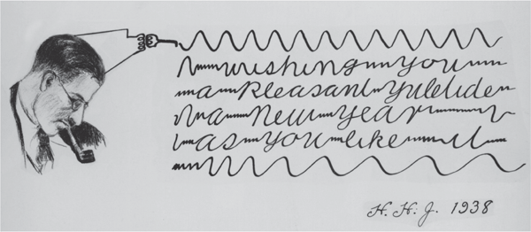

Signal Monitoring
Calibration
Training
Online

Signal Monitoring
In this section you will observe your brain activity being recorded from the EEG system! Please read the following instructions carefully before continuing:
- Make sure the connection status says Headset Connected!
- When you click on Begin Signal Monitoring, a new window will show raw data being received from the headset in the top row and filtered EEG data in the bottom row
- Notice how the filtered EEG data looks smoother then the raw data. This is because of the high frequency noise is being removed using a bandpass filter (1-20Hz).
- It's also important to check the impedance levels of the electrodes to make sure they're getting good quality data
- Click on the "Channels" tab in the cognionics data acquisition window and make sure the eight electrodes on the bottom right-hand side of the screen are all green
- If one or more electrode channels are not solid green, try readjusting the individual electrodes on the EEG equipment and make sure they're all touching your head until the impedances turn green
- When all the electrodes are green on your impedance check, you can move on to the next step
- When you blink your eyes during an EEG recording, you'll notice a specific type of EEG activity happening in channels F3 and F4
- The type of activity that should be elicited from eye blinks is a positive spike
- Notice that the electrodes farther away from your eyes (i.e. P3, P4, O1, and O2) have a spike with a lower amplitude than that of electrodes F3 and F4
- Lastly, if you clench your teeth, or scrunch up your face like your angry, you'll notice a sudden change in EEG frequencies corresponding to this behavior
- Click Begin Signal Monitoring when ready!
- Once you've made sure the EEG is recording properly (your eyeblinks and clenched face activity is showing and your impedance check is all green) proceed to the Calibration Stage

P300 Calibration
- When you click Start Calibration, a black window will pop-up on your screen: maximize the window if it is not already maximized
- In this black window, a matrix of letters, A-Z, and numbers, 0-9, will appear, followed by one of these characters being highlighted in blue
- Your job is to stare and focus on the highlighted character for the duration of the trial
- During the trial, an entire row of characters will flash for a split-second followed by an entire column of characters being flashed for a split-second (or vice versa)
- Count the number of times the letter highlighted (character you should be focusing on) in blue flashes and repeat this for the entire duration of the trial
- After one trial is completed, another character will be highlighted in blue, thus signaling the start of a new trial and a new character you must fixate and focus on
- The calibration session will continue automatically until it has ended; when the calibration session ends, you can move on to the P300 Training session
- To begin the calibration session, click Start Calibration

P300 Training
- This session is training a classifier to take your previously collected calibration data and predict the occurrence of a P300 wave
- In the next session, you will form words by choosing letters and numbers
- The P300 Speller system will predict which character you chose based on the elicited P300 waves in your EEG activity
- To begin the training session, first click Get Calibration File followed by Train XDAWN and, once that has been completed, finally click Train LDA

P300 Online
- After you press Start Online a black window will appear like in the calibration session
- Just like the calibration session a matrix of letters, A-Z, and numbers, 0-9, will appear
- This time, instead of a letter being highlighted for you, you get to choose the letter
- Pick whichever letter from the matrix you desire and focus on that character for the duration of the trial just like you did in the calibration session
- You will focus and stare at the character you chose while an entire row of characters will flash for a split-second followed by an entire column of characters being flashed for a split-second (or vice versa). Don't forget to count the number of times your desired character flashes
- At the end of a trial, a character will be highlighted in green (this should be the character you chose and were fixated on)
- This highlighted character will then be recorded in a textbox at the bottom of the screen
- After the character you chose is highlighted in green, choose another character to focus on for the next trial, and so on and so forth, until your desired word has been created!
- Focus on any number to post your word to indicate the completion of your word and post it on the class live feed
- Whenever you're ready to put your thoughts into words, go ahead and press Start Online
Console
{{console_output}}